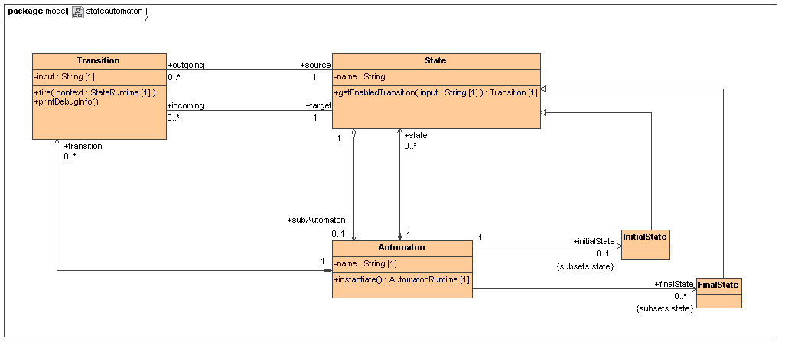
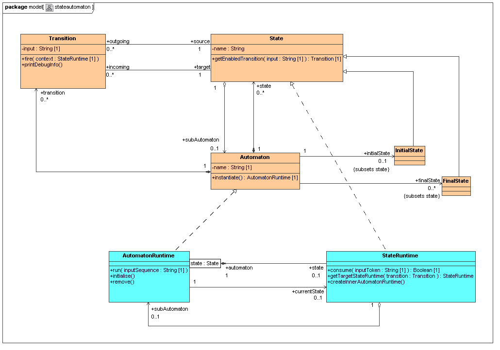

Tutorial: Using our Tools for Model Driven Language Development
written by Andreas Blunk, April 2007
This tutorial demonstrates the usage of our language modelling tools by creating an example language for state automatons. We begin with an overview of our language modelling method.
Overview
Computer languages consist of different aspects like structure, static constraints, notation and execution semantics. Like any other piece of software, they can be modelled. Language modelling reduces language development to modelling each language aspect, so that tools and specifications can automatically be derived.
 |
Structural models of the language concepts are the basis for all other language aspects. They define the language's abstract syntax in a language meta-model (they define the models the user can write). All other language aspects are based on the language meta-model. They provide meta-model elements with additional information that is needed to describe them, e.g. for aspects like notation and semantic. Many languages are more than static structure, they describe dynamic processes. If we want to execute, interpret or simulate models in these languages, we have to define their execution semantics. Our approach is to define static structures (language concepts) and dynamic structures (runtime concepts), and then apply behaviour descriptions to them. Static structures define the model the user can write, while dynamic structures define additional data structures where runtime information is saved. This information allows execution of different runtime models based on the same static model. We augment structure models with operations to describe the behaviour of a model in a defined language. These behaviour models describe state changes in the language model. Different possibilities exist to specify behaviour, e.g. pure Java code, activity diagrams from UML or abstract state machines. Please refer to the following articles and papers whenever you need detailed information in order to understand the following sections: |
An Example Language: State Automatons
In this section we demonstrate the tools for using our method by creating a language for state automatons. The language consists of several models that describe the different language aspects. The basis is a language meta-model that describes the structure of state automatons. The basic concepts that are needed for this language are: automaton, transition and state. We further specialised state into initial state and final state.
Based on these concepts, the structure model should reflect the following rules:
An automaton has a name. It may have many states and many transitions. There has to be one intial state and one or more final states. Each state has a name and outgoing as well as incoming transitions. A state may contain a sub-automaton. Transitions describe state changes by defining on which input token a transition fires. A transition must have one source and one target state. States can consume input tokens. Consuming a token results in the firing of an outgoing transition. An automaton can consume a sequence of input tokens.
Modelling structure: MagicDraw UML
Static structure
These structure concepts can be modelled with MagicDraw UML. We support loading and saving MagicDraw models in our other modelling tools which allows us to use MagicDraw as the basis for all structural modelling tasks. But we are not dependend on MagicDraw UML, you can use any UML tool that can load and save a model in XMI 2.0 format.
TODO: remove operations from diagram
Runtime structure
Executing the model requires runtime information that could be stored in the model itself. But this approach has flaws. We often need several runtime representations of the same model element. E.g. in our language, each automaton instance has to remember its current state. If we have an automaton with two states and each of them contains the same sub-automaton X, then each instance of X could be in another state at runtime. We model runtime representations with an UML realisation arrow which has no predefined meaning in MOF. Below you can see the complete structural model with static structure and dynamic structure.
TODO: remove operations from diagram
Static constraints
...
Structure meta-model: CMOF
The structure model is our language's meta-model. It is based on a meta-meta-model in the CMOF language. CMOF can be used for object-oriented modelling of language structure. It provides enhanced features like subsetting and redefinition that allow a flexible design and embrace reuse of common language concepts.
Programming with CMOF-based models: A MOF 2.0 for Java
In order to work with CMOF-based models, we developed a programming framework: A MOF 2.0 for Java (abbreviated AMOF). We need our language meta-model in a format that AMOF can understand, and this is XMI. AMOF currently understands XMI 2.0 and file formats of several proprietary UML modelling tools. One of them is MagicDraw UML which is our preferred tool for modelling structure. So you could easily create the model for our language with MagicDraw. If you do not want to try MagicDraw now, you can download the model as MagicDraw-XML here.
Generating repository code
The following source code shows how we can use AMOF to generate code for meta-model elements. This allows allows type-safe programming with models in the repository.
1 /*********************************************************************** 2 * State Automaton Language 3 * Copyright (C) 2007 Andreas Blunk 4 * 5 * This library is free software; you can redistribute it and/or 6 * modify it under the terms of the GNU Lesser General Public 7 * License as published by the Free Software Foundation; either 8 * version 2.1 of the License, or (at your option) any later version. 9 * 10 * This library is distributed in the hope that it will be useful, 11 * but WITHOUT ANY WARRANTY; without even the implied warranty of 12 * MERCHANTABILITY or FITNESS FOR A PARTICULAR PURPOSE. See the GNU 13 * Lesser General Public License for more details. 14 * 15 * You should have received a copy of the GNU Lesser General Public 16 * License along with this library; if not, write to the Free Software 17 * Foundation, Inc., 51 Franklin Street, Fifth Floor, Boston, 18 * MA 02110-1301 USA 19 ***********************************************************************/ 20 21 package hub.sam.stateautomaton; 22 23 import java.util.Arrays; 24 25 import hub.sam.mof.Repository; 26 import hub.sam.mof.javamapping.JavaMapping; 27 import hub.sam.mof.runtimelayer.M1SemanticModel; 28 import cmof.Package; 29 import cmof.Tag; 30 import cmof.cmofFactory; 31 import cmof.reflection.Extent; 32 33 public class GenerateRepository { 34 35 public static void main(String[] args) { 36 Repository repository = Repository.getLocalRepository(); 37 Extent m3Extent = repository.getExtent(Repository.CMOF_EXTENT_NAME); 38 Package cmofPackage = (Package) m3Extent.query("Package:cmof"); 39 40 Extent stateAutomatonExtent = repository.createExtent("stateautomaton", m3Extent); 41 cmofFactory stateAutomatonFactory = stateAutomatonExtent.getAdaptor(cmofFactory.class); 42 43 try { 44 repository.loadMagicDrawXmiIntoExtent(stateAutomatonExtent, cmofPackage, "resources/StateAutomaton.syntax.mdxml");
Loads the state automaton meta-model into an extent.
45 46 Package stateAutomatonModel = (Package) stateAutomatonExtent.query("Package:model"); 47 48 Tag nsPrefixTag = stateAutomatonFactory.createTag(); 49 nsPrefixTag.setName(JavaMapping.PackagePrefixTagName); 50 nsPrefixTag.setValue("hub.sam.stateautomaton"); 51 stateAutomatonModel.getTag().add(nsPrefixTag);
The meta-model is located in CMOF package "model". We add a prefix to the model's package so that code will be generated in Java package "hub.sam.stateautomaton.model" (instead of just "model").
52 53 M1SemanticModel semanticModel = new M1SemanticModel(stateAutomatonFactory); 54 semanticModel.createImplicitElements(Arrays.asList(new Package[] {stateAutomatonModel}));
These lines instruct AMOF to generate extra code for classes that are related to each other via runtime-representation-of-relationships. An example: For our language this generates a method metaCreateStateRuntime() for class State which we could use to create instances of StateRuntime.
55 56 repository.generateCode(stateAutomatonExtent, "generated-src");
Finally we generate the code in directory "generated-src/".
57 } 58 catch (Exception e) { 59 e.printStackTrace(); 60 System.exit(-1); 61 } 62 } 63 64 }
Creating a state automaton model
Now we are able to create a model in the state automaton language. We use a factory for instantiating meta-model elements and associate the created model elements with each other.
source code: instantiating a sample language model
figure: sample language model
end.